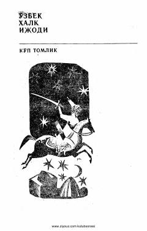

MFozil Yo'ldosh o'g'li tomonidan kuylangan an'anaviy o'zbek dostoni.
Mazkur doston mashhur baxshi Fozil Yo'ldosh o'g'li ijrosidan yozib olingan bo'lib, o'zbek xalq dostonchiligi namunalaridan biri hisoblanadi. Asarda qahramonlik motivlari, xalqimizning boy madaniy merosi va epik an'analari o'z aksini topgan.